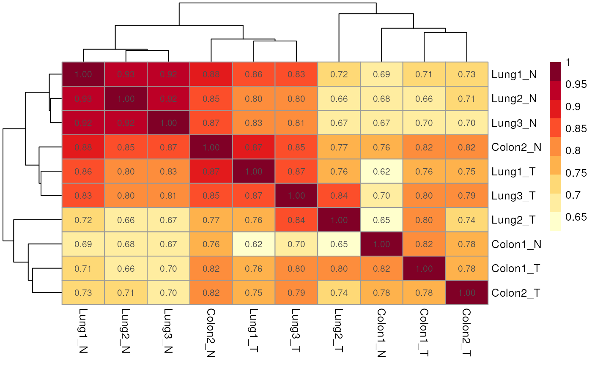
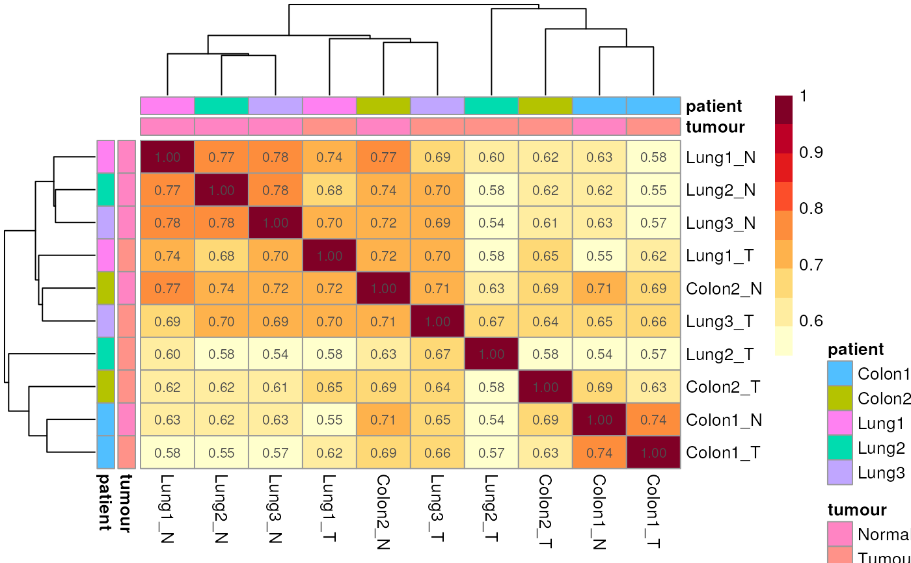

Compute and plot the correlation matrix across samples (or group means) using the selected normalisation measure and optional region filters.
plotCorrelationMatrix(
qseaSet,
regionsToOverlap = NULL,
useGroupMeans = FALSE,
sampleAnnotation = NULL,
normMethod = "nrpm",
minEnrichment = 3,
annotationColors = NA,
minDensity = 0,
...
)qseaSet.
Input object containing windows and signal (beta or nrpm).
GRanges, data.frame (coercible to GRanges), or NULL.
If provided, restrict computation to windows overlapping these regions; otherwise
use all windows.
Default: NULL.
logical(1).
If TRUE, average replicates by the group column and compute correlations
on group means; if FALSE, use individual samples.
Default: FALSE.
tidyselect specification or character() or NULL.
Columns from the sample table to display as annotations on the heatmap
(e.g., c("tumour","patient") or bare helpers tumour, patient).
Default: NULL.
character(1).
Measure to correlate. One of "nrpm" or "beta".
Default: "nrpm".
numeric(1).
For "beta", values with enrichment < minEnrichment are set to NA before
correlation.
Default: 3.
list or NA.
Optional named colour maps for annotations (passed to pheatmap), e.g.
list(tumour = c(Tumour = "firebrick4", Normal = "blue")).
Default: NA.
numeric(1).
Minimum CpG_density required to keep a window.
Default: 0.
Additional arguments forwarded to pheatmap::pheatmap().
A pheatmap::pheatmap object.
Windows are optionally restricted by regionsToOverlap and filtered by minDensity.
Correlations are computed on the chosen normMethod after any group averaging.
For "beta", entries below minEnrichment are set to NA to down-weight
low-enrichment windows.
data(exampleTumourNormal, package = "mesa")
# By default uses NRPM
exampleTumourNormal %>% plotCorrelationMatrix()
#> Generating table of nrpm values for 819 regions across 10 samples.
#> No empty columns to remove.
#> No empty rows to remove.

# Using beta values and adding sample annotations
exampleTumourNormal %>%
plotCorrelationMatrix(normMethod = "beta",
sampleAnnotation = c(tumour, patient))
#> Generating table of beta values for 819 regions across 10 samples.
#> No empty columns to remove.
#> No empty rows to remove.
